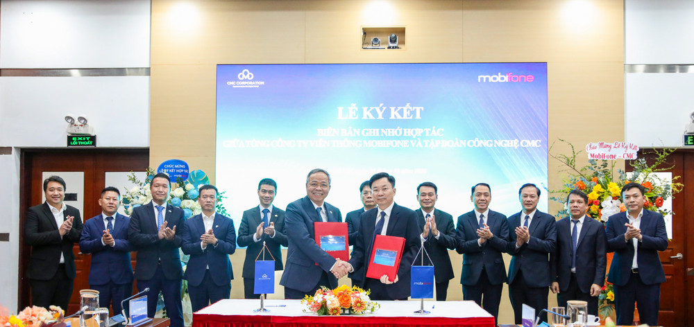
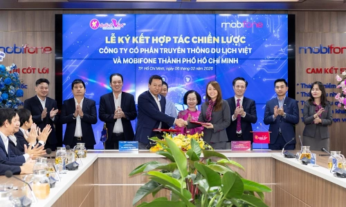

Sứ mệnh
Với MobiFone, sứ mệnh là không ngừng đổi mới, sáng tạo và tạo dựng hệ sinh thái số hoàn chỉnh, đáp ứng mọi nhu cầu, đánh thức mọi tiềm năng, đồng hành cùng người Việt kiến tạo tương lai số, xã hội số và góp phần đưa Việt Nam sớm trở thành quốc gia số.

Định hướng hoạt động
MobiFone duy trì là doanh nghiệp nhà nước chủ lực quốc gia về cung cấp các dịch vụ số, phát triển dịch vụ viễn thông di động sử dụng các công nghệ tiên tiến trên nền tảng hạ tầng dữ liệu hóa, giải pháp số/nền tảng số và các dịch vụ nội dung số.

Giá trị cốt lõi
Đứng trước bối cảnh mới, với định hướng chuyển đổi từ kinh doanh dịch vụ viễn thông trở thành nhà cung cấp hạ tầng số và dịch vụ số tại Việt Nam, từng người MobiFone đồng lòng quyết tâm sẽ thực hiện theo định hướng văn hóa mới.